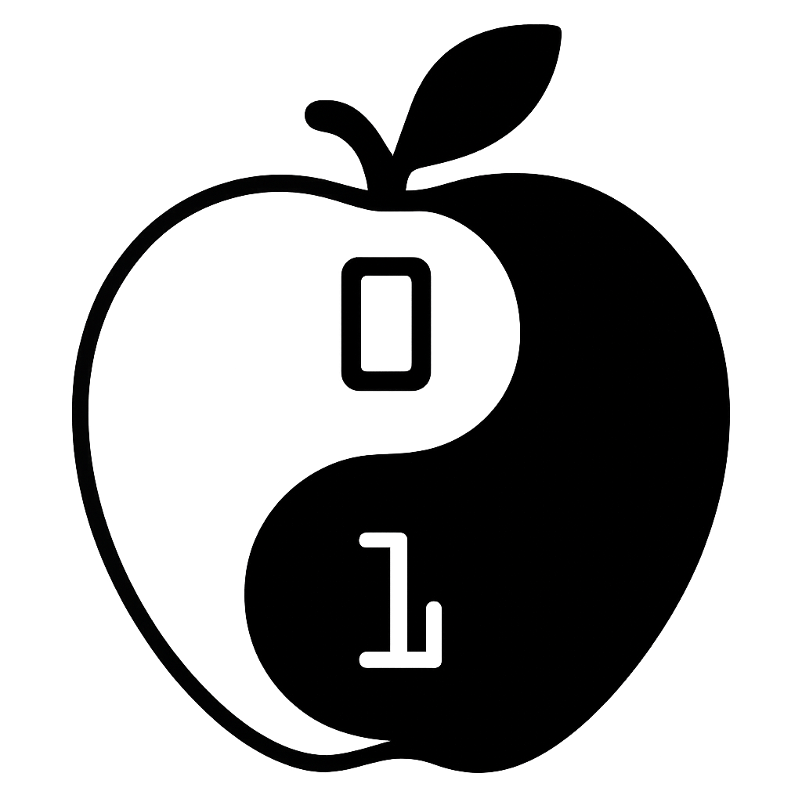

長野市で活動する、子どもたちのための無料プログラミングクラブ「CoderDojo長野」のWebサイトです。
（ここに次回の開催予定や、前回の様子をメンバーみんなで書き込んでいきます！）
7歳から17歳を主な対象とした、オープンで自主的なプログラミングサークルです。世界中で何千ものDojoが開催されています。 詳しくは以下をご覧ください。
西澤 晃一
普段はプログラマーとして働いています。
知野 裕二
普段はエンジニアとして働いています。
長野県立図書館 3階 で開催しています。
connpassのグループから、イベントページにてお申し込みいただけます。